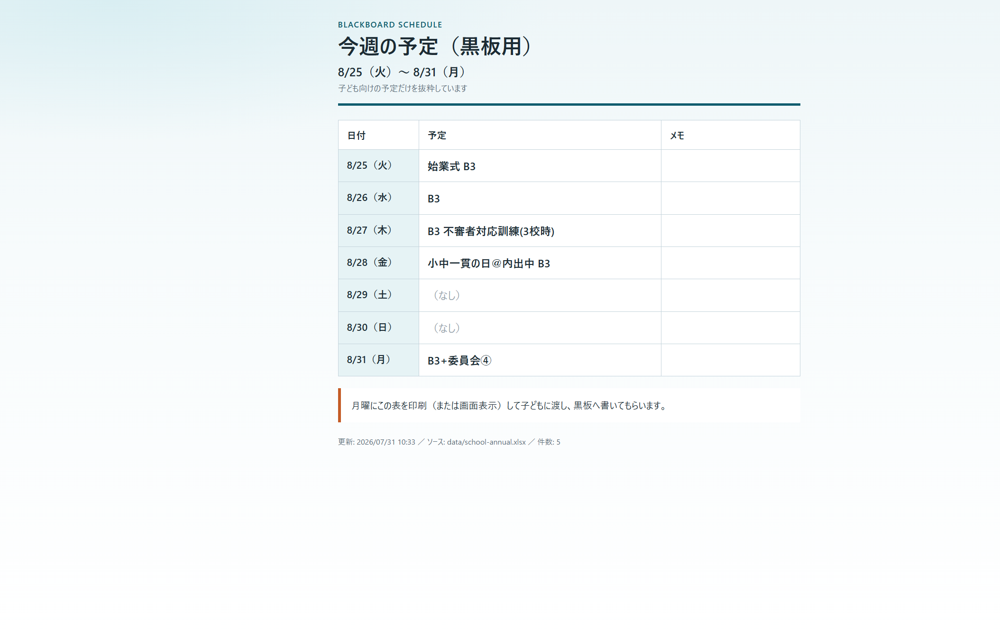

TRIGGER
トリガー
毎週日曜 20:00。GitHub Actions。
小学校の教室横に、1週間の予定を書く黒板がある。月曜に紙を係の児童へ渡すのが地味に面倒で、よく忘れる。 私だけの、私が便利になるツールとして作った。
以前 · 手作業
いま · 自動化
決めごと
1掲示板はログイン必須直結しない。原本を手元に置く。
2CSVは月ごと年間Excelを正とする。行事予定列だけ。
日直名は出さない。
3朝6時出勤日曜20:00に、同じURLを更新する。
4学校メールへ最初は迷惑メール。
解除して、届くようにした。
動かす
毎週日曜 20:00。GitHub Actions。
学校の年間予定Excel。行事予定の列だけ。
翌月曜〜日曜を抜き、印刷用HTMLに。
同じURLを更新し、学校メールへ。
到着。月曜に渡す表

公開ページの例（2学期始めの週）。月曜に印刷して子どもへ渡し、黒板へ書いてもらう。
掲示板直結も、原本を毎回自動で取りに行くことも、やらなかった。 できるところだけ自動化して、紙を渡す瞬間だけ人手に残した。 完璧な連携より、月曜に忘れないこと。 公開ページ: awayuki-ai.github.io/weekly-blackboard-schedule